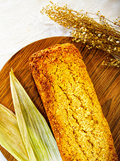

This recipe makes two loaves. This is not the corn bread recipe I was expecting (not a lot of corn).
Ingredients
1 tsp. granulated sugar
1/4 cup warm water
1/4 oz. active dry yeast (one packet)
1 1/3 cups warm milk
1/3 cup granulated sugar
6 Tbsp. butter or non-dairy alternative, softened
2 tsp. salt
2 large eggs, beaten
1/4 cup cornmeal
3 cups all-purpose flour
4 1/2 cups (approximately) all-puropse flour
2 tsp. butter or non-dairy alternative, softened for brushing
Steps
First step is to make the active yeast slurry, take the teaspoon of sugar and mix in a small bowl with warm water. Then add the active yest to the mixture and stir til dissolved. Let sit for 10 minutes.
Combine the next seven ingredients in a large bowl. beat to moisten and then add yeast mixture. contine mixing till a smooth dough is formed. Add remaining flour to dough until the dough starts to pull away from sides of the bowl.
Remove and place dough on floured surface. Kneed 8 to 10 minutes until smooth and elastic.
Grease a large bowl, put the dough in, and cover with a tea towel. Let rest for about an 1 1/2 hours.
After ~1 1/2 hours, uncover and punch doen the dough. divided the dough and shape the halves into loaves.
Place the dough halves into two 9 x 5 x 3 inch pans. Covered with a tea towel, let sit for around 30 minutes or unitl doubled in size. preheat oven to 375℉ (190℃).
after rising, bake for 35 to 40 minutes. Place on to a rack to cool when finished and brush with butter.